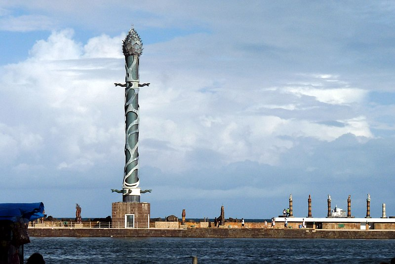

Dicas de Viagens
Marco Zero - Recife

O Marco Zero, na Praça Rio Branco, é conhecido como local de fundação da cidade do Recife e também como ponto inicial de contagem das distâncias calculadas a partir da cidade. O lugar é um dos pontos mais importantes na capital Pernambucana, pois é também uma região de forte movimento durante o Carnaval.
Aproveite sua visita para tirar uma foto com os dois marcos (o antigo e o novo), observar a vista para o Parque de Esculturas e os edifícios do Centro Cultural da Caixa e da Associação Comercial de Pernambuco.
Se quiser fazer compras, vale a pena visitar o novo Mercado de Artesanato, que também fica no local.
.jpg)
.jpg)
Com esta grande reforma, profundas modificações foram feitas no bairro e na praça, como a demolição da Matriz do Corpo Santo e a abertura de novas e largas avenidas. No local onde estava a igreja, está edificado o edifício Maurício de Nassau, de características modernas e fachadas em vidro. Ao seu lado foram construídos os prédios da Associação Comercial de Pernambuco e a Bolsa de Valores. Estes dois prédios apresentam, em sua arquitetura, nítida influência francesa que se caracteriza pela mistura de diversos elementos construtivos, além do armazém 10 e 12 que serviam ao porto do Recife para estoque de açúcar. Estes prédios, hoje, abrigam a sede do Grupo Industrial João Santos, o Santander Cultural, a Associação Comercial de Pernambuco, a Caixa Cultural e o Centro de Artesanato de Pernambuco, considerado o maior do segmento no Brasil.
Em 1999 a praça que existia no local recebeu severas modificações. O busto do Barão do Rio Branco e o Marco Zero foram realocados para a borda da praça. A "nova praça" foi projetada pelo pintor Cícero Dias, em 1999. No seu centro se encontra uma enorme obra de arte feita por ele. Inspirado em sua obra Eu vi o mundo e ele começava no Recife, criou um grande circulo com uma Rosa dos Ventos no centro. A obra tem em média 10m de raio. Atualmente serve como ponto de encontro de jovens, desportistas, artistas, turistas e moradores da cidade. Além de ser palco de comemorações e apresentações artísticas.
